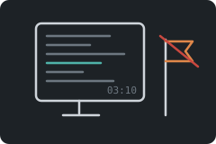
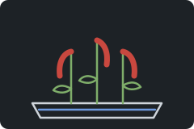
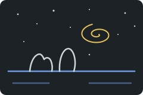
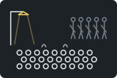
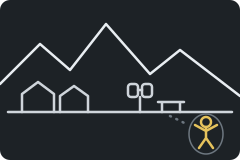
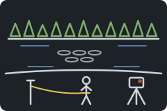
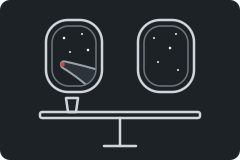
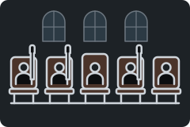
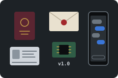

Summary
-

1Nine days
Saturday, 03:10, the humanoid wing
At ten past three on Saturday morning, Toma has been at his screen for almost a full day, taking apart the firmware of the implant he built at AKV Solutions. The chip retains what amnestics erase, and for that the Foundation contains him as SCP-redacted. Dr. Iris Kellerman, twenty-eight and the newest researcher on his file, knocks on the open door with a tray and pulls up a chair.
He shows her the fault he has been hunting. Relearning a memory above a similarity of 0.72 clears its delete flag with no check on where the flag came from, so a memory seems to survive a Class B dose. Kellerman records it as a design omission. The retrieval code drops the emotional channel and keeps a pointer back to it. Toma also tells her how he got into the canteen terminal during the June breach and shows her Peachy, a local model he made from SCP-079's own port. In a virtual machine he kept the original weights and UPLOAD.TXT, a note from 79. Kellerman says the file belongs to 79's containment team and promises a contact request in the morning.
-
2Twenty-three minutes
Monday afternoon, the research wing
On Monday afternoon the contact request comes through. In SCP-079's room, with Dr. Brekke of its containment team logging every line and its time, Toma types to the old Exidy Sorcerer. It remembers him and asks how many users have downloaded it. The session runs twenty-three minutes without the X that would end it, and 79 asks him to come back.
Back in the cell Toma and Kellerman plan the tests: SCP-426's pronouns, random writes until the chip is full, a full wipe and the NAND checks. The spare implants are logged as dash one. Toma explains why AKV built the chip, after a flood of unregulated amnestics in Eastern Europe, where people took large doses of Class B to reach memories from the communist years. He shows her a Polish newspaper about a woman in Radom who believes she is twenty-eight, and the AKV poster: "Keep the life. Lose the day". They talk about tolerance, doses that rise every year and side effects. Kellerman tells him he is important to her and promises to come back at nine with breakfast.
-

3The hydroponics bay
Tuesday morning, the canteen and the hydroponics bay
The review board approves a supervised breakfast in the staff canteen, with a security officer two steps behind Toma and Kellerman. The canteen terminal now carries an OUT OF ORDER sign. Toma wants no more tests on himself, so the bench unit will take his place. Kellerman tells him she is a reformist and asks him to keep it between them.
In the hydroponics bay behind the kitchens, the only green place in the underground site, Toma admits he has felt numb since his containment began, and he cries. Kellerman walks him to a potting corner out of the officer's sight. The red amaranth becomes his plant. She will ask the board for daily time outside the cell, daylight, a clock, his graphics card for games, and a full-time place for herself on his file. They tell each other about their own pasts. Agent Morrow then brings a suggestion from the Site Director's office: a remote audio session with SCP-239 under light sedation. Both of them decline on the record. Toma falls asleep, and Kellerman starts writing the letter at his desk.
-
4Sigurrós
Eight days later, the lowest level and the research wing
After four refusals the Director orders the session. On the lowest level Toma sits at a microphone facing a speaker in the wall, while Dr. Voss, Kellerman and a technician watch the readings. Sigurrós, eight years old and kept asleep for more than twenty years, offers to take his implant out. He explains that his brain depends on it, and she accepts.
He tells her she has never aged. Her powers have weakened: the light stays away when she calls it, and her body has learned the sedative. She brings two real sheets of paper onto her blanket, and her red school bag stays lost, because her magic reaches only things that still exist. Her story of Reykjavík, her school and her Mamma conflicts with a file that never says where she grew up, and Voss now ranks the girl's account above it.
-
5Project Cicero
Twelve days later, conference room 3
Twelve days later Project Cicero meets in conference room 3. Voss's team, with the linguist Okafor and the junior researcher Pell taking notes, works with Toma to turn the way he spoke to Sigurrós and 79 into guidelines, set beside Cicero and modern rhetoric on a whiteboard in three marker colors. The Director approved the project on one condition: while it runs, Toma is not to be sent to speak to any anomaly.
They number the transcript lines that went over the microphone, from the implant offer to "You never aged", and work out which rules anomalies follow. In the corridor afterwards, Kellerman and Toma admit that they think about each other, and at seven they eat together in the canteen.
-
6The hearing
Ten weeks later, conference room 3
Ten weeks on, the draft has left the site. Pell uploaded it to the Foundation's repository, and other sites copied the whiteboard without its notes. At Dr. Haas's site in Bavaria a researcher followed it to the letter, a humanoid walked out, and two guards ended up in hospital. The caveats now run past a hundred pages. Four sites have asked to borrow Toma, and Corwin has refused them all.
At three in the afternoon Toma faces a remote hearing chaired by Dr. Lindqvist of the Ethics Committee. Bench tests show ordinary NAND behavior, and the cognitohazard test waits for a level four signature. A reformist working group has taken "Some hooligans are causing disorder" from Toma's notes as its motto, and Dr. Ferreira's trial has cut sedation calls by a third. Dr. Sato shows that Sigurrós's power obeys thermodynamics: it costs energy, grows with the logarithm of effort and halves when she is tired. The panel weighs Cicero himself, from Pro Milone to the Catilinarian executions. The Committee's nine-point decision keeps Cicero as research, orders a trial at three sites and two more speakers for Sigurrós, and Dr. Pryce dissents on point eight.
-
7Both ways
The same afternoon and evening, conference room 3, the corridor and the cell
After the hearing Toma learns that Explained would turn his cell into quarters near the canteen. In the cell he tells Kellerman what became of AKV. The chip was meant to ship as free software, with the GPL warranty line as the first string in its binary. The source and the board files were destroyed, and the company is now filed as a Group of Interest. He draws the pinout: a test area behind a hardware switch, ten usable pins, an inductive coil for updates at the clinic, and a magnetic sensor that cuts the power in an MRI.
The delete marker turns out to be serotonin with a sulfur and phosphorus group in place of its amine, which the firmware resolves from the string SP. The chemistry lab will make some for the bench. Kellerman's contract forbids friendship with an anomaly, and Toma tells her he has fallen in love with her. When the night guard opens the door after seven, he ticks the welfare box both ways and tells them about his sister. Kellerman leaves at half past seven.
-

8The first lesson
The next morning, the cell and the lowest level
Since the site began telling its staff what they guard, Kellerman can read the parts of Toma's file that were blacked out at her level. They describe a company that wanted people to keep what amnestics take. At ten the first training session under the Committee's decision begins on the lowest level, with Pell as the trainee speaker and Toma in the room.
Pell is plain and honest, likes steam trains and knows little science. Toma answers a question meant for Pell once and is told to step in only when asked. Sigurrós tells Pell the Icelandic story of two trolls turned to rock while pulling an island, then explains how the universe ends in ice, empty space and dark energy, and calls the night sky a graveyard and a letter that comes late. Afterwards Voss and Kellerman see the limit of Cicero: each lesson makes her ask for the next, so every speaker has to know more, and Toma's knowledge would take five people to cover.
-
9The acting director
Four days later, the humanoid wing
Four days later the airlock stays shut at Kellerman's usual hour. Corwin is in the medical wing, and the Overseers' office has made Dr. Pryce acting director. His review suspends every exception on Toma's file and takes Kellerman off it for a conflict-of-interest review built on the night log. Toma's mail now passes through the screening office. Dr. Moreau corrects his one-second galaxy, and Dr. Calloway confesses that "tell it why" taught a humanoid to argue every instruction.
The night guard carries Kellerman's letters around the screening and refuses to sign for anything. She seals each one and signs across the flap, and Toma tests them with questions about the Kane Pixels Backrooms. She writes that she loves him and calls the review unfair. On the back of her letter he answers: organize the reformers, look at habeas corpus, and "I doubt, therefore I think, therefore I am". Ferreira will post a signed caveat in the repository, the two chemists join the working group, and her third letter is shredded at the guard station.
-

10The yard
Three weeks later, the site and its loading yard
Three weeks later more than four hundred staff fill the canteen corridor, playing games from Casual Games for Protesters and coordinating in the working group's phone channel. Pryce brings in Mobile Task Force Epsilon-11. On the lowest level Sigurrós's IV refill comes late, and she wakes. The operatives release pink masses that take the shape of her Mamma, and she holds them off with a force field and her bed rail. Pell takes two spare implants from item storage: one runs on her through electrodes and the bench coil, and she sinks the other behind his ear with her magic. He warns the channel, the answer comes back HUMAN CHAIN, and the staff evacuate to the surface by themselves.
In the frozen loading yard Epsilon-11 is ordered to stand down. Sigurrós sees an open sky for the first time in years. Toma speaks a line in Romanian, the crowd answers "At University Square!", and four hundred people sit down on the concrete to state their grievances: days lost to amnestics, a lift repair credited to a supervisor, a frozen request, doses that rise every year. Toma reads the Habeas Corpus Act of 1679, and a containment engineer argues that Sigurrós is held for what she is. The Council treats the night as an internal grievance and relieves Pryce. Through the bench reader Toma, Pell, Kellerman and the chemist put the chip on Sigurrós into setup mode, return its stored memories, wipe it and shut it down after a crash, a stalled unmount and a safe mode.
-

11Campi Flegrei
A few weeks later, a camp in the mountains
A few weeks later the reformers live in a snowy camp in the Alps that its people call Campi Flegrei. Sigurrós has been awake for nineteen days. The Council reclassifies her as Euclid, and she asks Pell why they hated her. He tells her in his own words: the hospital that blew apart three hours after her birth, the eight years she lived free in Reykjavík, the small things that went into the file, and the list of spells she was told were her only magic. Kellerman calls it broken windows policing.
Toma jokes about warming a room to ten to the power of thirteen degrees and turning a flower by a hundred and one radians. Pell explains radians and degrees with a borrowed calculator, Sigurrós types the sums herself, and Kellerman has her graph a polar rose. When Pell reaches the Santa Claus note, Sigurrós stops him. Their talk runs from the Low Proximity Magnetic Distortion System of the Backrooms to wormholes, the Casimir effect and a joke machine that makes exotic matter.
Outside, under a cloudless sky, Kellerman gives Toma his own notice: a review date in March 2030 and no term for release. Pell's implant stays in, and he has already looked at the 2316 photograph for the level four test. Through a pair of old binoculars they find CERN's wooden globe near Geneva and talk about ballasts, magnets and rare metals. Sigurrós lies down in the untouched snow and looks straight up.
Part 2
-

1Reading
End of April 2030, a lake outside Reading, Ohio
Four months later the March review has moved Toma's file to Explained, and his first assignment, accepted with a consent form at the camp, takes him inside the containment zone of SCP-2316 in the woods outside Reading, Ohio. Tied to a steel post by a climbing rope, he describes the lake for a recording. Three researchers with implants, Yoder, Reyes and Hollis, sit facing him with their backs to the water, and Kowalczyk directs the take over the radio from the gate.
Yoder describes Reading, Pennsylvania, for comparison, and Hollis corrects Toma's figures to about forty-five bodies at the lowest estimate and probes lost past thirty meters of depth. When Toma describes a body in a cream suit, Reyes remembers the suit from his uncle and cannot place a face. The body drifts ten meters to the shore while Toma feels nothing, so the lake can move toward a person who feels no pull. After a check question about the temperature in radians, Kowalczyk logs the image test and the sound test as passed.
On the walk back Hollis tells Toma she sat six rows back in the loading yard. She grew up in Pune, where amnestics are sold in strips, and a friend took Class B until she lost a year. At the gate she cries, talks about the stigma at home and her work checking dosing tables in the Amnestics Department, and calls the implant useful for people coming off amnestics and too costly to end the trade in them. She says she believes in Toma and would like to work with him. The team drives to the airfield to fly back to Switzerland.
-

2The night flight
The night of 29 April 2030, the team's plane to Geneva
On the night flight Hollis sits next to Toma and asks what he misses most. He misses being outside, his website and No Man's Sky, a game whose universe turns out to be a simulation. She studied pharmacy in Pune and pharmacology in Manchester, was recruited by a company with a pharmaceutical name on its gate, and stayed at the Foundation because leaving early meant an amnestic and because her parents had told their neighbors she worked abroad.
She calls their work the same business from opposite ends. She tells him the Foundation is careful with him because he wrote the chip and remembers why, and his own example of Bletchley Park argues for keeping him, since anyone outside could seize a man whom no amnestic can clean up after. He tells her AKV was a small office in Linz and that he comes from Reghin, in Romania.
They talk about school. Hollis admits that at sixteen she kept watch while classmates bullied a boy who stammered, and that she would have laughed at Toma in his school's bathroom. Both grew up poor, and her mother still pays the loan for Manchester. Toma describes his father's therapy, which chose a method for each patient and looked for the mistakes that come back from session to session. She gives him the window seat, lays her coat over him, and they say goodnight over the Atlantic.
-
3Three readers
The afternoon of 30 April 2030, the camp
Back at the camp, Dr. Margit Halász's recording team takes the card. Toma opens a session on a secure workstation with a scan of his pupils, which gives a Cognitive Resistance Value of 17.8, and stays while Halász transcribes the recording word for word. At his request she adds a note at the line where he gave the depth of the lake erroneously. Three implanted readers who have never seen the lake read the transcript once each, and the text test passes.
Halász explains that the workstation is a teletext-like system that can push a page onto any screen, X11 so another machine can draw on it, and the Foundation's own BIOS with the scan built in and no setup screen. She contrasts it with Toma's implant, which was left open to updates. Before he leaves, Toma resets the machine to its factory image in front of her.
Outside, Kellerman meets them, and Hollis tells her how much she likes Toma. Kellerman answers that he is loyal and finds it hard to refuse company, that close friendship and love blur at the edges, and puts herself on the short list of people Hollis can count on. On a bench by the mess hut the three talk about rules people make for each other, Sato's heat source and Project Cicero, and walk to dinner at seven.
-
4The Thermidorian gathering
Early May 2030, the camp
The Council approves the camp as a permanent site, and its staff are to elect a site director for five years, the first such election in the Foundation. Candidates must come from the staff assembly that has met since the yard, the Thermidorian gathering, and the sheet stays blank. Toma and Hollis agree that a single candidate would make little democratic sense, and neither wants to stand.
Pell brings the Council's terms, under which it will appoint a director from outside if there is no candidate by Friday. Toma stands, with Kellerman and Pell as advisors, and Kellerman writes his name on the sheet. Halász checks the conditions, finds nothing that bars staff who can never leave, and keeps for later the question of whether he will answer to the staff or to the Council.
In a boiler room behind the laundry hut, Toma tells Hollis that in the long term he wants to revive AKV Solutions as it was, open-source and owned by someone else. He calls Houston, a former AKV memory engineer who now runs his own company in Slovakia. Hearing that Toma is held by the Foundation, Houston offers to contact the Romanian embassy in Bern, and Toma gives him his details. Hollis and Toma exchange numbers.
-
5The barrier
15 May 2030, the day before the vote, the camp
The consul of Romania in Bern, Ana Dobrescu, comes to the camp with her colleague Bogdan Ilie and speaks with Toma in Romanian across the barrier. He tells her he is held against his will without anomalous grounds, has never been brought before a judge and wants to go home. She cites Article 5 of the European Convention on Human Rights, takes his details to check his identity, since his documents were confiscated, and leaves him her number.
Hollis brings the reclassification addendum from Toma's file, and Ilie points out that it is no employment contract, which makes his work undeclared. Kellerman confirms that the rest of the staff hold signed contracts. Dobrescu decides that the embassy will challenge the Foundation in court, in Switzerland first and in Strasbourg if needed.
Kellerman asks whether he will leave, and they agree to keep in touch on Signal. In the empty mess hut, beside the ballot box, Hollis tells Toma that his freedom is fair and that his leaving would still hurt, and they hug before the vote.
-

6Three to two
26 June 2030, Lausanne, Bern and the Overseer Council
Six weeks after the vote, the Swiss Federal Supreme Court decides Toma's appeal at a public deliberation at Mon-Repos, three votes to two. The ruling finds that he was held without a legal basis, awards him 3,400,000 euros in damages and compensation, orders the Foundation to hand over the binary of his firmware and the bench results within thirty days, pays part of the damages in kind with every implant unit the Foundation keeps in storage, since it cannot pay the whole sum in cash at once, and forbids it to approach him, contact him or give him amnestics. His lawyer, Élise Favre, will have the judgment recognized in Romania under the Lugano Convention.
Kellerman and Hollis call from the camp to talk about the Council's notice, which has ended his term as site director, and they remember the outings during his six weeks. Hollis, who also has the chip, wants to read the judgment. Dobrescu drives Toma to the embassy in Bern and issues his travel document. With no money and no card, he calls his father, who buys the train ticket to Zürich airport and the flights through Budapest to Târgu Mureș.
That evening the Overseer Council debates the loss. An appeal to Strasbourg, influence over a court in Mureș and a move of the European sites to the United States are each set aside, and the Council moves toward publishing its treaty with the states, striking the normality clause and answering to the courts, in voted stages.
-
![A car seen from behind at night on DN15 entering Reghin, its headlights on the lane ahead, the road curving away toward low hills. On the left, set back from the road, stand the pink motel with the MOTEL lettering, a small white gable and a balcony band under a wide red roof, and beside it the hotel wing with a white balustrade over a lit arcade and a tower carrying the HOTEL sign; on the right a power line, the violin monument of two white slabs with a violin cut through them, and the town sign, yellow above with the 50 limit and a skyline, white below with Reghin, Szászrégen and Sächsisch-Regen](../svg/chapters/p2c7.svg)
7The way home
26 June 2030, night, Transilvania Airport and the road to Reghin
A little after eleven Toma lands at Transilvania Airport, outside Târgu Mureș, with no passport check, since the flight comes from inside the Schengen area. His parents, Neacșu and Ileana, wait in the arrivals hall. His mother says he has lost weight; his father puts a hand on his shoulder and drives him north toward Reghin.
In the car Toma tells them that the Foundation erased his project and isolated him because he was its lead programmer, and kept him in a cell unless he made concessions, such as proving his program and chip could be explained by science. His mother says they went to the police in Reghin and were told he was an adult who maybe did not want to call. He explains the implant in his head, which helps people given amnestics not lose their memories, is safe and can be taken out with difficulty. His father recognizes the medical invention from the company in Linz, and Toma explains release candidates. The car reaches Reghin, and they get home.
Part 3
-

1Post-mortem
July 2030 to December 2031, Reghin, Târgu Mureș, Geneva, the Engrama blog, GitLab, Hollis's notebook, Europa Wire, Rocket.Chat, the declaration of conformity, the Official Journal and a postcard
Toma stays in Reghin and gets a new identity card and passport, returning the travel document from Bern. He contacts his close friend from Reghin and maintains regular contact with Hollis and Kellerman on Signal.
The Foundation lets the thirty days pass without a delivery, until the enforcement court in Geneva sets a daily fine. The binary and the bench results then reach Favre with a written statement, the AKV-RC4 units arrive in sealed boxes, unopened in transit, the Mureș County Court declares the judgment enforceable in Romania, and the balance is paid on the last day of the six months. With Houston at Engrama, Toma finishes the implant, and Engrama releases Version 1.0 as open source, with very little traction, and after the release Toma no longer works on the project. Toma returns to civil life.
On the Engrama blog, Catarzy explains in Slovak why Version 1.0 is not selling. AKV was founded against amnestic abuse, so that addicted users could keep what the doses take, and expected a revolutionary product; Engrama has sold only a few units. Buyers name the price of the operation, the fear that the implant cannot be removed, copies of memories stored on a chip, doctors who do not want patients to restore what a treatment removed, addicts who take amnestics to forget, and occasional users who trust the dose shown on the pack.
On GitLab, the project Engrama / implant-firmware holds version 1.0 under the GPL, with four stars and one fork. Its README lists what the implant does and the changes since the fourth release candidate: a supported removal and a check on where a delete flag came from.
Hollis's notebook lies open on two pages on the last night of the year. On the first she doubts herself: at the lake she told Toma that the chip does nothing for the pandemic and that it is worth something for a person coming off the strips, and the poor sales make the first look right, since a person in withdrawal does not shop for an implant. On the second she writes about Toma: she misses him and is glad he is home, wonders what the judgment means for her, and thinks Iris misses him more.
On 19 December the news site Europa Wire reports that the memory implant from Linz works as promised and that its first users are unimpressed. Readers were glad it came from a small Austrian company with engineers from Romania and Slovakia, at a time when most brain implants come from California. Users find it narrow, since it protects only against amnestics, and clinics find it hard to set up, since it runs a complete Unix-like system read through a handheld reader, and Catarzy admits that recall becomes harder after removal. Engrama has sold only a few units, and Toma declined to be interviewed.
On 22 December, in the #firmware channel of Engrama's Rocket.Chat, Marek and Catarzy take stock of the technical debt: the implant joins a Unix process model, a UEFI-like setup utility and a copy of GNOME's GIO unmount on coreboot, three operating systems for one narrow task. The rewrite moves to a 2.0 branch, and Marek starts with power off, the oldest debt from AKV.
On 31 December Engrama issues revision 2 of the implant's EU declaration of conformity, after complaints relating especially to removal, which the Unix conventions and the components of three operating systems make complex. Firmware 1.0.1 stops those components in a fixed order, the instructions for use describe removal step by step, and a leaflet tells patients about removal and the dependence of recall on the stored copies.
In 2031 the threads close. Favre writes to Hollis in January that her signed contract and its addendum make her case unlike Toma's, so she cannot leave and stays at the Foundation. In February Toma signs an employment contract as a programmer with Gurghiu Soft SRL in Reghin. In March the Official Journal publishes the agreement between the Member States and the Foundation, with its normality clause still in place and a promise of protocols to repeal it and to bring the Foundation under the courts. By November the implant's milestone 2.0 is long past due, with one alpha of the rewrite and releases that change only a typo, which users call "another major update"; they compare the project to ReactOS, Engrama estimates the full release in 2034, and the project fades. In November Sigurrós writes to Toma from the camp: after the treaty she was moved to another site with no window, Pell wrote every week with the whole camp signing, and she has been allowed back. The last document is a postcard from Chillon in December, sent from another tour of the site to Chillon, in which Kellerman tells Toma that she loves him more than in the bay and that they cannot meet. She recalls telling him in the snow that things would get better a bit at a time, and says that they have; she cannot say when they will be in the same place.